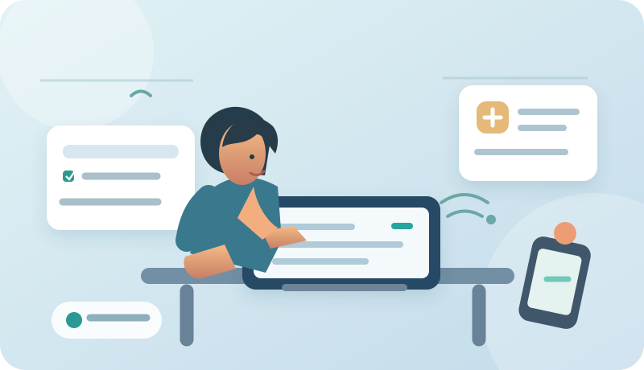
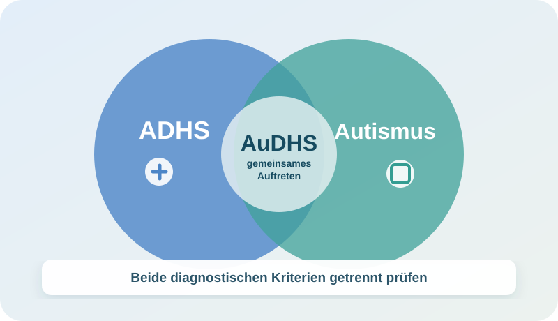

ADHS verstehen: 18 Themen, zwei Lebensphasen.
Bearbeite zu jedem Alltagsthema eine Frage für das Erwachsenenalter und eine rückblickende Frage zur Kindheit. Danach werden fünf mögliche Auswirkungen erfasst. Die Auswertung zeigt nachvollziehbar deine Antworten, ohne eine Diagnose zu behaupten.
← Zur Übersicht ADHS / AuDHS · Bilder & Animationen ↗ · Fallwerkstatt Plus ↗
Mit Bildern leichter verstehen
Zu den Übungsfragen gibt es passende Illustrationen und interaktive Erklärungen zu Aufmerksamkeit, Planung, Impulsivität, Reizen und AuDHS.
Visuelles Lernstudio öffnen ↗Fortschritt sichern und wieder aufnehmen
Standardmäßig bleiben Antworten nur bis zum Schließen oder Neuladen der Seite erhalten. Aktiviere die freiwillige lokale Sicherung, wenn dieser Browser deine Antworten und Notizen beim nächsten Besuch wiederherstellen soll. Keine Cloud, keine automatische Übertragung. Bei einem gemeinsam genutzten Gerät besser deaktiviert lassen.
Lokale Sicherung ist ausgeschaltet.
Beim Import werden die aktuellen Antworten ersetzt. Importierte Inhalte bleiben zunächst nur in dieser Sitzung.
Deine Antworten – einfach erklärt
Nur zur ÜbungDu siehst zuerst eine Zusammenfassung in Alltagssprache. Darunter wird erklärt, wie die Zahlen zustande kommen. Das ist kein Diagnosetest.

AuDHS als Bild erklärt
Eine interaktive Grafik zeigt, was gemeinsames Auftreten bedeutet und weshalb es keine automatische Doppeldiagnose aus Fragebogenergebnissen geben kann.
AuDHS-Visualisierung öffnen ↗Vertiefung mit fiktiven Fällen
Sechs Erwachsenenfälle mit insgesamt 18 didaktischen Entscheidungen, Hilfen und Musterbegründungen. Die Lernpunktzahl ist keine Diagnose.
Geführte Fallwerkstatt öffnen ↗Wichtige Lernhinweise
Ein ADHS-Diagnosegespräch prüft, ob die Merkmale schon in der Kindheit begonnen haben, über längere Zeit bestehen, in mehreren Lebenssituationen auftreten und das Leben merklich beeinträchtigen. Es untersucht außerdem andere mögliche Ursachen wie Schlafprobleme, Angst oder Depression. NICE NG87
Bei AuDHS müssen autistische Merkmale zusätzlich eigenständig untersucht werden. Die Ergebnisse dieses Übungsbogens liefern dafür weder einen Autismus- noch einen AuDHS-Wert. Zum separaten Autismus-/AuDHS-Lernbereich
Offizielle Hintergrundinformation zum ärztlich geführten Interview: DIVA Foundation. Dessen Originalinhalte werden hier nicht übernommen.